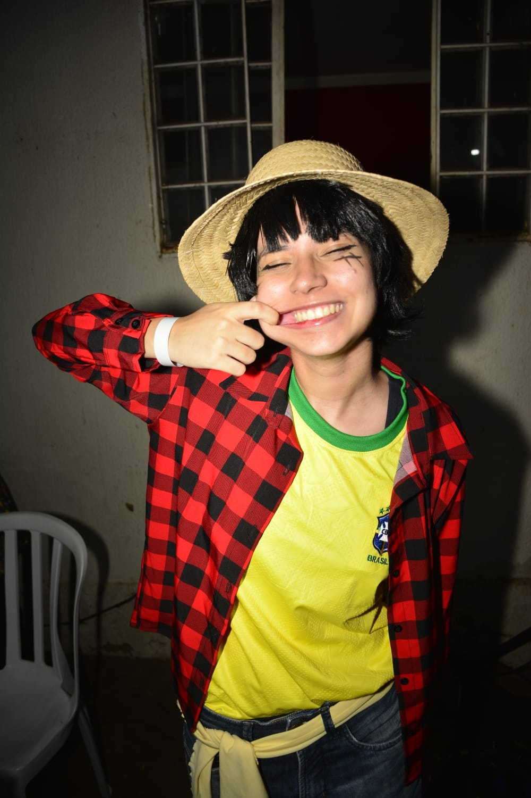
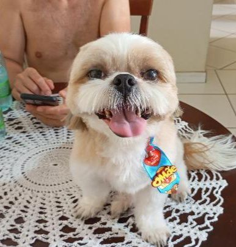

| Nascimento | 16 de março de 2007 Rio de Janeiro, Brasil |
| Residência | Goiânia, Goiás |
| Identidade | Não binária · Panssexual |
| Atividade | Cosplay, colecionismo, leitura |
| Perfil | @maahcos |
| Cor favorita | Vermelho |
| Animes favoritos | Hunter × Hunter, Neon Genesis Evangelion |
| Animal de estimação | Beethoven (cachorro) |
Mari (Rio de Janeiro, 16 de março de 2007) é uma cosplayer brasileira, colecionadora, leitora e entusiasta da cultura pop conhecida por sua criatividade, autenticidade e pela forma como transforma seus interesses em parte central de sua identidade. Nascida na cidade do Rio de Janeiro, onde passou parte da infância, desenvolveu desde cedo uma forte ligação com a arte, a imaginação e diferentes formas de expressão. Mesmo após sua mudança para Goiânia, manteve um vínculo afetivo profundo com sua cidade natal, pela qual ainda demonstra carinho e saudade.
Ao longo de sua vida, Mari enfrentou desafios importantes que contribuíram para a formação de sua personalidade. A adaptação a uma nova cidade e o período escolar foram marcados por experiências difíceis, incluindo situações de bullying. Ainda assim, destacou-se por manter sua autenticidade, recusando-se a abrir mão de seus gostos ou modificar sua forma de ser para se adequar a expectativas externas. Essa postura se tornou uma das características mais reconhecíveis de sua trajetória.
Seu processo de autoconhecimento incluiu a compreensão de sua identidade como pessoa não binária e panssexual. Esse entendimento foi influenciado, em parte, pelo contato com criadores de conteúdo que acompanhava há anos, especialmente o artista Linkdozap. Ao observar sua vivência e expressão de identidade, Mari encontrou referências que a ajudaram a compreender sentimentos que antes não conseguia nomear. Esse processo gradual permitiu que se sentisse mais confortável e segura para expressar quem é.
Há em Mari uma tendência constante de questionar e diminuir a própria validade emocional, como se seus sentimentos precisassem sempre passar por uma espécie de aprovação antes de serem aceitos como legítimos. Ela oscila entre intensidade emocional e a tentativa de racionalizar o que sente, o que faz com que expressar vulnerabilidade se torne, muitas vezes, um processo interno complexo. Ainda assim, isso não significa ausência de profundidade emocional, mas sim uma forma intensa e, por vezes, silenciosa de vivenciá-la.
Apesar disso, há nela uma força que não se expressa de maneira evidente ou grandiosa, mas sim de forma contínua e persistente. Mari permanece mesmo quando duvida de si, continua mesmo quando se sente insegura e insiste mesmo quando seria mais fácil se afastar. Essa constância, embora discreta, revela uma forma de coragem que não depende de reconhecimento externo para existir. Sua sensibilidade e sua resistência coexistem, criando uma personalidade marcada tanto pela profundidade emocional quanto pela capacidade de seguir adiante.
Apesar das dificuldades ao longo da vida, Mari é frequentemente descrita por pessoas próximas como alguém que mantém uma postura acolhedora e atenta ao bem-estar dos outros. Mesmo em momentos pessoais desafiadores, costuma priorizar o conforto de quem está ao seu redor, sendo vista como uma presença gentil e constante.
Seus interesses são amplos e profundamente conectados ao universo da cultura pop. Entre seus animes favoritos estão Hunter × Hunter e Neon Genesis Evangelion. Seu personagem favorito em One piece é o Sanji, Mesmo que ela tenha ficado um tempo fingindo ser o Luffy para estressar o Verdadeiro Luffy Goiano. Ela também demonstra grande apreço por personagens como Asuka, Neferpitou e Donquixote Doflamingo, que possuem significados importantes em sua trajetória pessoal e emocional, representando referências afetivas que fazem parte de sua forma de interpretar histórias.
Mari acompanha diferentes áreas da cultura pop asiática de maneira constante e dedicada. Na música, é fã do grupo sul-coreano Stray Kids, tendo como integrantes favoritos Changbin e Han. Em paralelo, também é admiradora do grupo BTS, do qual aprecia especialmente os membros V, RM e Suga. Ambos os grupos fazem parte de seus interesses musicais, ainda que sejam formações distintas dentro do K-pop.
Além disso, acompanha há anos o trabalho de Gemaplys e demonstra grande admiração pelo canal Mundo Torajo. No universo dos jogos e animações, demonstra forte ligação com Sonic the Hedgehog, tendo como personagens favoritos Sonic, Shadow, Silver, Rouge e Knuckles.
Mari também possui uma relação intensa com colecionáveis e itens de cultura pop. Sua coleção inclui bonecos, figuras e pelúcias, especialmente de artistas e personagens que admira, além de uma extensa quantidade de mangás e livros que compõem um dos aspectos mais importantes de sua rotina pessoal.
O cosplay é uma das formas mais importantes de expressão pessoal em sua vida. Por meio da conta @maahcos, com quase mil seguidores, compartilha suas caracterizações e demonstra sua criatividade na construção de personagens, utilizando a atividade como um espaço contínuo de expressão artística.
Entre suas características mais conhecidas estão seus gostos e peculiaridades cotidianas. É extremamente friorenta, sentindo temperaturas baixas com facilidade incomum, e ao mesmo tempo é reconhecida por sua forte admiração por piscinas. Sua cor favorita é o vermelho, e suas bebidas preferidas incluem ice de maracujá e chá de hortelã com mel. Também é muito próxima de seu cachorro Beethoven, com quem mantém uma relação de forte afeto.

Mesmo diante de experiências difíceis, Mari é frequentemente lembrada por sua capacidade de seguir em frente sem abrir mão de sua essência. Sua personalidade combina sensibilidade, criatividade e uma postura constante de cuidado com os outros. Para pessoas próximas, ela se destaca não apenas por seus interesses e expressões artísticas, mas principalmente pela forma consistente com que escolhe permanecer autêntica e gentil em diferentes contextos de sua vida.
Considerações do autor
Conheci a Mari em 2026 e, em pouco tempo, ela acabou se tornando uma das presenças mais importantes da minha vida. Não foi algo barulhento ou repentino, foi algo que simplesmente foi se construindo aos poucos, de um jeito que mudou a forma como eu enxergo muitas coisas. Ela me fez olhar pra mim mesmo com mais honestidade, me fez perceber padrões que eu ignorava e me deu, mesmo sem perceber, um tipo de espelho que eu não tinha antes. Com isso, muita coisa em mim começou a mudar.
A Mari teve um impacto direto na forma como eu me comporto no dia a dia. Eu passei a tentar entender melhor meus hábitos, minhas reações e até a forma como eu trato as pessoas. Aos poucos, isso acabou refletindo na minha vida de um jeito mais amplo. Eu me reaproximei da minha família, principalmente do meu irmão e dos meus pais, e comecei a dar mais valor para coisas que antes eu deixava passar. Ela me ajudou a entender que sentimentos não são exageros, não são bobagens e não são algo que deve ser ignorado. São reais, mesmo quando são confusos, e precisam ser levados a sério.
Escrever isso aqui também é uma forma de tentar organizar o quanto ela significa pra mim. Não é só sobre falar, é sobre reconhecer de verdade o impacto que alguém pode ter na vida de outra pessoa em tão pouco tempo. A Mari se tornou isso pra mim, alguém que mudou a forma como eu penso, como eu sinto e como eu tento agir.
Mari é uma das pessoas de quem eu mais tenho orgulho nesse mundo, mesmo com todos os problemas e dificuldades que ela já enfrentou. Existe algo na forma como ela continua seguindo em frente que é difícil de não admirar. Ela não precisa de perfeição, não precisa de facilidade, e ainda assim segue tentando ser ela mesma em um mundo que muitas vezes tenta encaixar todo mundo em moldes que não fazem sentido.
O orgulho que eu sinto dela não vem de coisas grandiosas ou de conquistas externas, mas da forma como ela lida com a própria vida. De como ela continua sendo autêntica, de como ela preserva quem é mesmo quando seria mais fácil mudar, e de como ela mantém uma sensibilidade que, em vez de diminuir quem ela é, só torna tudo mais verdadeiro. Existe uma honestidade emocional nela que é rara, mesmo quando ela duvida de si mesma.
Ver a Mari sendo quem ela é, com todas as inseguranças, com todos os momentos difíceis e ainda assim com uma capacidade tão grande de se importar com os outros, me faz respeitar ela de uma forma que vai muito além de palavras simples. É um orgulho silencioso, constante, que não depende dela estar bem o tempo todo, mas justamente de saber que mesmo nos dias ruins ela ainda está ali, sendo ela.
E talvez isso seja o que mais me impressiona. Ela não precisa ser perfeita para ser incrível. Ela só precisa ser ela, e isso já é suficiente para eu sentir esse orgulho enorme e genuíno que não diminui com o tempo, só cresce.
Ela sabe que eu gosto dela de forma romântica, e isso já foi conversado entre nós. Recentemente nós acabamos nos afastando por motivos que, olhando com mais calma agora, foram em grande parte erros meus e atitudes impensadas. Eu reconheço isso com clareza. Eu não quero fingir que foi pequeno ou simples, porque não foi, mas eu quero deixar claro que eu estou tentando mudar. Estou tentando ser uma pessoa melhor para ela e também para mim mesmo. Mais presente, mais consciente, mais maduro no jeito de lidar com as coisas.
O que eu sinto pela Mari não é algo que se limita a uma definição única. Não é só sobre gostar romanticamente, embora isso exista, mas também sobre admiração, cuidado e um respeito profundo por quem ela é. Mesmo quando existem dificuldades, isso não apaga o quanto eu valorizo a presença dela na minha vida.
E mesmo que um dia não exista mais a possibilidade de algo romântico entre nós, isso não muda o que ela representa pra mim. Eu ainda quero que ela continue na minha vida, de um jeito saudável, leve e verdadeiro. Como amiga, como alguém importante, como uma pessoa que eu quero ver bem e feliz. Porque o que mais importa pra mim não é um rótulo de relação, mas sim a conexão real que existe e o impacto que ela teve em mim.
A Mari é alguém que, mesmo sem tentar, me ensinou muito. Me ensinou sobre paciência, sobre olhar mais para dentro, sobre responsabilidade emocional e sobre o valor de ser verdadeiro com o que a gente sente. E isso não é algo que desaparece fácil. Pelo contrário, é algo que fica.
No fim, tudo o que eu quero é simples e ao mesmo tempo muito grande. Eu quero ser alguém que faz bem pra vida dela, que respeita o espaço dela, que reconhece erros e aprende com eles, e que esteja presente de um jeito saudável, seja qual for o formato disso no futuro. E principalmente, eu quero que ela saiba que, independente de qualquer coisa, ela foi e continua sendo alguém extremamente importante pra mim.